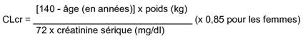

RÉSUMÉ DES CARACTÉRISTIQUES DU PRODUIT
ANSM - Mis à jour le : 12/09/2011
LEVOCETIRIZINE ACTAVIS 5 mg, comprimé pelliculé
2. COMPOSITION QUALITATIVE ET QUANTITATIVE
Chaque comprimé pelliculé contient 5 mg de dichlorhydrate de lévocétirizine (équivalant à 4,2 mg de lévocétirizine).
Excipient: chaque comprimé pelliculé contient 64,0 mg de lactose monohydraté.
Pour la liste complète des excipients, voir rubrique 6.1.
Comprimé pelliculé.
Comprimé pelliculé blanc à blanc cassé, ovale, biconvexe, portant l'inscription « L9CZ » sur une face et « 5 » sur l'autre face.
4.1. Indications thérapeutiques
Traitement des symptômes nasaux et oculaires de la rhinite allergique perannuelle et saisonnière et des symptômes de l'urticaire idiopathique chronique.
4.2. Posologie et mode d'administration
Le comprimé pelliculé sera avalé avec une boisson sans être croqué.
Le traitement peut être pris au cours ou en-dehors des repas.
Adultes et adolescents de 12 ans et plus:
La dose recommandée est de 5 mg une fois par jour (soit un comprimé par jour).
Enfants de 6 à 12 ans:
La dose quotidienne recommandée est de 5 mg une fois par jour (soit un comprimé par jour).
L'utilisation de la lévocétirizine n'est pas recommandée chez les enfants de moins de 6 ans en raison de l'insuffisance des données d'innocuité et d'efficacité.
Sujets âgés:
Il n'existe actuellement pas de données suggérant la nécessité d'un ajustement de la posologie chez les sujets âgés dont la fonction rénale est normale.
Insuffisant rénal:
Il n'y a pas de données disponibles permettant d'évaluer l'efficacité et la sécurité de la lévocétirizine chez les sujets atteints d'insuffisance rénale. Compte tenu de l'élimination essentiellement rénale de la lévocétirizine (voir rubrique 5.2.), en l'absence d'alternative, l'intervalle entre les prises doit être ajusté par rapport à la fonction rénale selon la posologie indiquée dans le tableau ci-après.
Pour utiliser ce tableau, il est nécessaire de calculer la clairance de la créatinine (CLcr) du patient en ml/min. La CLcr (ml/min) peut être estimée à partir de la valeur de la créatinine sérique (mg/dl) selon la formule suivante:

Adaptation posologique chez l'insuffisant rénal adulte:
|
Groupe |
Clairance de la créatinine (ml/min) |
Dose et fréquence d'administration |
|
Fonction rénale normale |
≥80 |
1 comprimé une fois par jour |
|
Insuffisance rénale légère |
50 - 79 |
1 comprimé une fois par jour |
|
Insuffisance rénale modérée |
30 - 49 |
1 comprimé une fois tous les 2 jours |
|
Insuffisance rénale sévère |
<30 |
1 comprimé une fois tous les 3 jours |
|
Insuffisance rénale au stade terminal et Patients dialysés |
<10 |
Contre-indiqué |
Chez l'enfant insuffisant rénal, la posologie doit être adaptée individuellement selon la clairance de la créatinine, l'âge et le poids du patient.
Insuffisant hépatique:
Aucun ajustement de la dose n'est nécessaire chez les patients atteints d'insuffisance hépatique isolée.
Insuffisant rénal et hépatique:
Chez les patients atteints d'insuffisances hépatique et rénale associées, un ajustement de la dose est recommandé (voir Insuffisant rénal ci-dessus).
Hypersensibilité à la lévocétirizine, à l'un des composants du produit, à l'hydroxyzine ou aux dérivés de la pipérazine.
Insuffisance rénale sévère avec une clairance de la créatinine inférieure à 10 mL/min.
4.4. Mises en garde spéciales et précautions d'emploi
Ne pas dépasser la dose préconisée.
L'utilisation du comprimé pelliculé de dichlorhydrate de lévocétirizine n'est pas recommandée chez les enfants de moins de 6 ans car il ne permet pas l'adaptation de la posologie.
La prudence est recommandée en cas d'ingestion d'alcool (voir la rubrique 4.5).
La prudence est recommandée chez les sujets épileptiques ou à risque de convulsions.
En raison de la présence de lactose, ce médicament ne doit pas être utilisé en cas de galactosémie congénitale, de syndrome de malabsorption du glucose et du galactose ou de déficit en lactase (maladies héréditaires).
4.5. Interactions avec d'autres médicaments et autres formes d'interactions
La pharmacocinétique, la pharmacodynamie et le profil de tolérance de la lévocétirizine sont en faveur d'un faible risque d'interaction médicamenteuse cliniquement significative. En particulier, il n'a pas été rapporté d'interaction médicamenteuse avec la pseudoéphédrine, ni la théophylline (400 mg par jour).
La prise d'aliment ne réduit pas le taux d'absorption de la lévocétirizine, mais diminue la vitesse d'absorption.
Aux doses thérapeutiques, il n'a pas été mis en évidence d'interaction cliniquement significative avec la prise d'alcool (pour des taux d'alcoolémie de 0,5 g/L). Néanmoins, la prudence est recommandée en cas d'ingestion d'alcool.
De très rares données cliniques sur des grossesses exposées sont disponibles avec la lévocétirizine.
Les études menées chez l'animal n'ont pas révélé d'effet néfaste direct ou indirect sur la gestation, le développement embryonnaire et fœtal, la parturition ou le développement postnatal (voir rubrique 5.3).
La prudence est recommandée lors de la prescription chez la femme enceinte.
La lévocétirizine semble excrétée dans le lait maternel. Par conséquent l'utilisation de Levocétirizine n'est pas recommandée au cours de l'allaitement et ne doit être envisagée que si les bénéfices attendus pour la mère sont plus importants que le risque potentiel pour l'enfant.
4.7. Effets sur l'aptitude à conduire des véhicules et à utiliser des machines
Des études cliniques comparatives réalisées avec la cétirizine à la posologie recommandée de 5 mg n'ont pas mis en évidence d'altération de la vigilance, du temps de réaction, ou de la capacité à conduire des véhicules et à utiliser des machines.
Cependant somnolence, fatigue et asthénie ont été décrits chez certains patients traités par lévocétirizine. Par conséquent, les patients susceptibles de conduire un véhicule, ou de manipuler un outil ou une machine potentiellement dangereux, devront évaluer au préalable leur réponse au traitement et en aucun cas dépasser la posologie préconisée.
La prise d'alcool ou d'autres dépresseurs du système nerveux central peut augmenter le risque d'altération de la vigilance et des performances chez certains patients plus sensibles.
La terminologie suivante a été utilisée pour classer les effets indésirables en fonction de leur fréquence d'apparition: très fréquent (≥ 1/10); fréquent (≥ 1/100 et < 1/10); peu fréquent (≥ 1/1 000 et < 1/100); rare (≥ 1/10 000 et < 1/1 000); très rare (<1/10,000); fréquence indéterminée (fréquence ne pouvant être estimée à partir des données disponibles)
|
|
Fréquent |
Peu fréquent |
Rare |
Très rare |
|
Troubles hématologiques et lymphatiques |
|
|
|
Thrombocytopénie |
|
Troubles du système immunitaire |
|
|
Hypersensibilité |
Choc anaphylactique |
|
Troubles psychiatriques |
Somnolence |
Agitation |
Agressivité |
Tic |
|
Affections du système nerveux |
Vertiges, céphalées |
Paresthésie |
Convulsion |
Dysgueusie |
|
Troubles oculaires |
|
|
|
Troubles de l'accommodation |
|
Troubles cardiaques |
|
|
Tachycardie |
|
|
Troubles respiratoires, thoraciques et médiastinaux |
Pharyngite |
|
|
|
|
Troubles gastro-intestinales |
Douleur abdominale |
Diarrhée |
|
|
|
Troubles hépatobiliaires |
|
|
Anomalie du bilan hépatique (augmentation des transaminases, phosphatases alcalines, gamma GT et bilirubine) |
|
|
Affections de la peau et du tissu sous-cutané |
|
Prurit |
Urticaire |
Œdème angioneurotique, éruption cutanée |
|
Trouble rénaux et urinaires |
|
|
|
Dysurie |
|
Troubles généraux et anomalies au site d'administration |
Fatigue |
Asthénie |
œdème |
|
|
Investigations |
|
|
Prise de poids |
|
*Chez l'enfant.
Symptômes
Les symptômes de surdosage correspondent principalement aux effets sur le système nerveux central et aux effets anticholinergiques. Les effets rapportés après ingestion de doses au moins 5 fois supérieures à la dose quotidienne recommandée sont confusion, diarrhées, vertiges, fatigue, céphalées, malaise, mydriase, prurit, agitation, sédation, somnolence, état confusionnel, tachycardie, tremblements et rétention urinaire.
Conduite à tenir en cas de surdosage
Il n'existe pas d'antidote connu à la lévocétirizine.
En cas de surdosage, un traitement symptomatique sera entrepris sous surveillance médicale. Un lavage gastrique ne sera envisagé qu'en cas d'ingestion récente.
La lévocétirizine n'est pas éliminée par hémodialyse.
5. PROPRIETES PHARMACOLOGIQUES
5.1. Propriétés pharmacodynamiques
Classe pharmacothérapeutique: ANTIHISTAMINIQUE A USAGE SYSTEMIQUE, DERIVE DE LA PIPERAZINE, Code ATC: R06AE09.
La lévocétirizine, le R-énantiomère de la cétirizine, est un antagoniste puissant et sélectif des récepteurs périphériques H1.
Des études de liaison aux récepteurs ont révélé que la lévocétirizine a une forte affinité pour les récepteurs humains H1 (Ki = 3,2 nmoles/L). La lévocétirizine a une affinité 2 fois supérieure à celle de la cétirizine (Ki = 6,3 nmol/l). La demi-vie de dissociation de la lévocétirizine des récepteurs H1 est de 115 ± 38 min. Le taux de fixation aux récepteurs après administration d'une dose unique est de 90% à la 4ème heure et 57% à 24 heures.
Les études de pharmacodynamie menées chez le volontaire sain ont montré une activité comparable entre la cétirizine et la lévocétirizine administrée à demi dose, tant au niveau de la peau que du nez.
Les propriétés pharmacodynamiques de la lévocétirizine ont été étudiées dans des essais randomisés contrôlés.
Une étude a comparé les effets de la lévocétirizine 5 mg, la desloratadine 5 mg et un placebo, sur la réaction erythémato-papuleuse induite à l'histamine. Le traitement par lévocétirizine a significativement réduit papules et erythème (p<0,001) avec une intensité maximale dans les 12 premières heures et maintenue pendant 24 h, comparativement à la desloratadine et au placebo.
Dans une étude contrôlée contre placebo en chambre d'exposition pollinique, le délai d'action sur les symptômes a été de 1 heure après administration de 5 mg de lévocétirizine.
Les études menées in vitro (chambre de Boyden et technique sur culture cellulaire) ont mis en évidence un effet inhibiteur de la lévocétirizine in vitro sur la migration transendothéliale des éosinophiles induite par l'eotaxine à travers des cellules dermiques et bronchiques. La lévocétirizine inhibe la phase précoce de la réaction allergique induite par l'histamine, et diminue également la migration de certaines cellules et la libération de certains médiateurs de l'inflammation impliqués dans la phase tardive de la réaction allergique.
L'efficacité et la sécurité de la lévocétirizine ont été démontrées au cours de plusieurs études cliniques en double aveugle, contrôlées, versus placebo, chez des patients présentant une rhinite allergique saisonnière ou perannuelle.
L'efficacité et la sécurité chez l'enfant de la lévocétirizine sous forme comprimé ont été démontrées au cours de deux études cliniques contrôlées contre placebo chez des enfants de 6 à 12 ans présentant une rhinite allergique soit saisonnière soit perannuelle. Dans les deux études, le traitement par lévocétirizine a significativement amélioré les symptômes et la qualité de vie liée à l'état de santé.
Dans une étude clinique contrôlée contre placebo réalisée chez 166 patients présentant une urticaire chronique idiopathique, 85 patients ont été traités par placebo et 81 patients ont été traités par 5 mg de lévocétirizine une fois par jour pendant 6 semaines. Le traitement par lévocétirizine a significativement diminué la sévérité du prurit au cours de la première semaine et pendant toute la durée du traitement comparativement au placebo. La mesure de la qualité de vie sur l'échelle, Dermatology Quality of Life Index, a montré un effet significativement supérieur de la lévocétirizine 5 mg par rapport au placebo.
Relation pharmacocinétique/pharmacodynamie:
5 mg de lévocétirizine génèrent un profil d'inhibition de l'éruption papulo-érythémateuse induite par l'histamine similaire à celui généré par 10 mg de cétirizine. Comme pour la cétirizine, l'effet sur les réactions cutanées provoquées par l'histamine n'est pas corrélé à l'évolution des concentrations plasmatiques.
Les ECG n'ont pas montré d'effets de la lévocétirizine sur l'intervalle QT.
5.2. Propriétés pharmacocinétiques
La pharmacocinétique de la lévocétirizine est linéaire, indépendante du temps et de la dose, avec une faible variabilité interindividuelle. Les profils pharmacocinétiques de l'énantiomère ou de la cétirizine sont identiques. Aucune conversion chirale n'intervient au cours des processus d'absorption et d'élimination.
Absorption
La lévocétirizine est rapidement et largement absorbée après l'administration orale. Chez l'adulte, les concentrations plasmatiques maximales sont atteintes 0,9 heure après la prise. L'état d'équilibre est atteint après 2 jours. Les concentrations plasmatiques maximales sont de 270 ng/ml et 308 ng/ml après administration, respectivement, d'une dose unique de 5 mg et de doses répétées de 5 mg par jour. La biodisponibilité est indépendante de la dose et n'est pas modifiée par la prise alimentaire, cependant, celle-ci entraîne une diminution et un retard du pic de concentrations.
Distribution
Aucune donnée n'est disponible chez l'homme concernant la diffusion tissulaire ou le passage de la barrière hémato-encéphalique de la lévocétirizine. Chez le rat et le chien, les plus fortes concentrations tissulaires ont été retrouvées au niveau du foie et des reins, les plus faibles au niveau du système nerveux central.
Chez l'homme, la lévocétirizine est liée à 90 % aux protéines plasmatiques. La distribution de la lévocétirizine est restreinte, puisque son volume de distribution est de 0,4 L/kg.
Métabolisme
Chez l'homme, la fraction de lévocétirizine métabolisée est inférieure à 14 % de la dose absorbée. Par conséquent, les différences résultant d'un polymorphisme génétique ou de la prise concomitante d'inhibiteurs enzymatiques sont considérées comme négligeables. Les voies métaboliques comprennent l'oxydation aromatique, la N et O - déalkylation et la conjugaison taurine. Les voies de déalkylation impliquent en premier lieu le CYP 3A4, l'oxydation implique des isoformes multiples et/ou non identifiées des CYP. La lévocétirizine n'a pas d'effet sur l'activité des isoenzymes CYP 1A2, 2C9, 2C19, 2D6, 2E1 et 3A4 à des concentrations nettement supérieures à celles atteintes après l'administration orale d'une dose de 5 mg.
En raison de sa faible métabolisation et de l'absence de potentiel inhibiteur du métabolisme, l'interaction de la lévocétirizine avec d'autres substances, ou vice-versa, est peu probable.
Elimination
Chez l'adulte, la demi-vie plasmatique est de 7,9 ± 1,9 heures. La clairance corporelle totale apparente moyenne chez l'adulte est de 0,63 ml/min/kg. La principale voie d'élimination de la lévocétirizine et de ses métabolites est urinaire, représentant en moyenne 85,4 % de la dose. L'élimination par voie fécale ne représente que 12,9 % de la dose. La lévocétirizine est excrétée à la fois par filtration glomérulaire et par sécrétion tubulaire active.
Insuffisance rénale
La clairance corporelle apparente de la lévocétirizine est corrélée à la clairance de la créatinine. Il est par conséquent recommandé d'ajuster la fréquence d'administration de la lévocétirizine en fonction de la clairance de la créatinine chez les patients atteints d'insuffisance rénale modérée à sévère. Chez les patients anuriques atteints d'insuffisance rénale au stade terminal, la clairance corporelle totale est réduite d'environ 80 % par rapport à celle d'un sujet normal.
5.3. Données de sécurité préclinique
Les données précliniques issues des études conventionnelles de sécurité pharmacologique, de toxicité à doses répétées, de génotoxicité, du potentiel carcinogène, de toxicité sur la fonction de reproduction, n'ont pas révélé de risque potentiel particulier pour l'homme.
Lactose monohydraté, cellulose microcristalline, stéarate de magnésium (E 572)
Pelliculage
Hypromellose (E 464), dioxyde de titane (E 171), macrogol 400
Sans objet.
3 ans.
6.4. Précautions particulières de conservation
A conserver dans l'emballage extérieur d'origine, à l'abri de l'humidité.
6.5. Nature et contenu de l'emballage extérieur
Plaquettes thermoformées (PVC/PVDC/Aluminium) ou plaquettes thermoformées (OPA/Aluminium/PVC/Aluminium)
Présentations:
Plaquettes thermoformées contenant 7, 10, 14, 15, 20, 21, 28, 30, 40, 50, 56, 60, 70, 90, 100, 112 ou 120 comprimés
Plaquettes unidoses contenant: 30x1 comprimés
Toutes les présentations peuvent ne pas être commercialisées.
6.6. Précautions particulières d’élimination et de manipulation
Pas d'exigences particulières.
7. TITULAIRE DE L’AUTORISATION DE MISE SUR LE MARCHE
ACTAVIS GROUP PTC EHF
REYKJAVIKURVEGI 76-78
220 HAFNARFJORDUR
ISLANDE
8. NUMERO(S) D’AUTORISATION DE MISE SUR LE MARCHE
· 398 586-4 ou 34009 398 586 4 7: 14 comprimés sous plaquettes thermoformées (PVC/PVDC/Aluminium).
· 398 587-0 ou 34009 398 587 0 8: 15 comprimés sous plaquettes thermoformées (PVC/PVDC/Aluminium).
· 398 588-7 ou 34009 398 588 7 6: 28 comprimés sous plaquettes thermoformées (PVC/PVDC/Aluminium).
· 398 589-3 ou 34009 398 589 3 7: 30 comprimés sous plaquettes thermoformées (PVC/PVDC/Aluminium).
· 398 590-1 ou 34009 398 590 1 9: 14 comprimés sous plaquettes thermoformées (OPA/Aluminium/PVC/Aluminium).
· 398 591-8 ou 34009 398 591 8 7: 15 comprimés sous plaquettes thermoformées (OPA/Aluminium/PVC/Aluminium).
· 398 592-4 ou 34009 398 592 4 8: 28 comprimés sous plaquettes thermoformées (OPA/Aluminium/PVC/Aluminium).
· 398 593-0 ou 34009 398 593 0 9: 30 comprimés sous plaquettes thermoformées (OPA/Aluminium/PVC/Aluminium).
9. DATE DE PREMIERE AUTORISATION/DE RENOUVELLEMENT DE L’AUTORISATION
[à compléter par le titulaire]
10. DATE DE MISE A JOUR DU TEXTE
[à compléter par le titulaire]
Sans objet.
12. INSTRUCTIONS POUR LA PREPARATION DES RADIOPHARMACEUTIQUES
Sans objet.
Liste II.